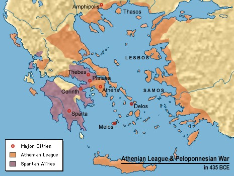

"[The Spartans'] unique constitution cannot be placed under any general head; cannot be called kingdom, oligarchy, or democracy, without misleading... it participated in all three." — J.B.Bury (quote p.118).
Executive summary; Table of Spartan Kings; Return to Main Page
We were fascinated to learn that Ancient Sparta employed a form of range voting as early as 700 BC. That was one of the ways (not all of them were good...) in which the Spartans were well ahead of their time.
The Spartan government setup had 4 branches. (The whole principle often attributed to Benjamin Franklin of "checks and balances" was clearly already well appreciated by the Spartans.)
"Legislation" as we know it today, basically did not exist in Sparta, and the few laws they had were memorized rather than written.
Sparta was a militarist state a lot like apartheid South Africa or the USA's (short-lived) confederate South. You enjoyed the fruits of the Spartan democracy (to the extent it was one) if you were a "Citizen." If you were a "Helot," then it wasn't so fun.
The "citizens" (also called "homoioi" or "Spartiates") owned land. The "Helots" were serfs, or anyhow a laboring peasant class. The Helots farmed plots and they paid as rent a large fraction of their harvest to the owners. The Spartans had conquered Messenia in 724 and 668 BC and made most everybody there into a Helot. Their goal was to keep it that way.
Incidentally, although that may seem highly unequal... and it was... Sparta was the only Greek city-state to introduce a land reform aimed at equalizing land-ownership wealth among its citizens; was far in advance of the others when it came to equal rights for women; and the whole barracks-upbringing thing tended to equalize society to a great extent. Also, the Helots were not as badly off as "slaves" in other Greek states like Athens. They could not be bought and sold by their "masters" (they were more like property of the State). They could marry who and when they wanted. They legally had parents and children. (Unlike in other Greek states, in which slaves were not allowed to marry, and offspring "belonged" to the slave's owner regardless of parenthood.) They could keep half their agricultural produce and presumably sell it; thus accumulating wealth. There are known to have been some occasions in which any Helot with enough money was allowed to purchase their freedom from the state.
E.g. Cleomenes III in 223/2 BC allowed Helots to become free by paying 500 drachmas; 6000 helots paid.
The Helots were not too thrilled about this setup. Somehow the Spartans were keeping control of a larger (20× larger?) number of Helots. There was always the worry of a Helot revolt. (Occasionally there actually was a Helot revolt, but none lasted very long before getting crushed.) The overclass, to prevent that, became ultra-militarized war-experts. The Spartans were famed throughout the Ancient World as the best fighters, invincible. They had a winning streak hundreds of years long. They developed infantry tactics of "phalanxes" and "hoplites"; had superior metalworking armor & weapons technology; and only the overclass had the money it took to pay for that. (This was a lot like the "knights" versus the "serfs" in the middle ages much later.)
Every male citizen had to be in the army and lived and trained in military barracks/schools until age 30 (left home to enter military boarding school at age 7!), after which they were "a man" and allowed to do other things (as well as to join the Appella). Not healthy enough to be in the army? Bad news. Unhealthy/deformed babies (both genders) were intentionally killed by exposure as part of their eugenics program. (Health judged by a panel of tribal heads.) Plus the whole culture of the place was about military valor and sacrificing for the good for the State. So you can imagine why the Spartans were the most feared in battle; the whole damn country was an armed camp to the max designed to keep the Helots subjugated.
The overclass had land-lots which it was illegal to subdivide, so they passed from parent to child and ensured the continuation of the class system without diminution. (However, gradually the rich got richer and many Citizens failed to meet requirements – to remain a Citizen you had to donate a certain amount of food each year to the military mess halls. This caused the number of Citizens to decline very slowly over the centuries. Cleomenes III redistributed land in 223 BC to try to create more citizens.) They had the "Krypteia," which was a secret police managed by the Ephors, keeping an eye on the Helots and organizing death squads and even large scale genocidal massacres if they felt like it. Spartan citizens had the legal right at any time to kill a Helot for any reason – such as, they were a bit uppity or worrysome. The only way a Helot could stop being a Helot was if he did something the State liked (the State could then reward him with emancipation & conversion to citizen). The main things the Helots could do that the State liked, was help the Army.
Spartan women were more free than in most ancient places. E.g. they could and did inherit and own land (indeed, by 400 BC some of wealthiest Spartans were women, and by 300 BC most land was owned by women, according to Plutarch; women were longer-lived which gave them advantages in property-accumulation) had equal rights in divorce, and girls got educated in a separate but somewhat equal way to boys, although they lived with their mothers and were not sent to boarding schools. The Spartans had an "agoge" system of public schools apparently unrivaled anyplace else, and (because of educating the women) its Citizens may have had a higher overall literacy rate than anywhere else. In particular there is reason to believe that a substantial number of women and men citizens could read (and probably almost all of the Ephors, Gerontes, and Kings). [Cartledge, Reflections p.48, and Plutarch claimed children were taught to read and write, albeit in minimal fashion, and it was commonplace for military commanders to write letters; however it should be kept in mind that books were very rare and the average person therefore had little or nothing to read.] E.g. there were Spartan Women who became Pythagoreans, which was that era's equivalent of graduate-school-level scholarship. Women had to do physical/gymnastic training (javelin, discus, wrestling, running, strength). They also were known to help the army. There were some dicey bits for adults aged 20-30 or so trying to form romantic attachments; that was highly constrained by the armed-camp system. You could marry before age 30, but it had to be a commuter marriage. They had a lot of homosexuality and views about polygamy or polyandry. But apparently Aristotle criticized them as not having enough homosexuality, which in his view was the sad result of letting those greedy women get too much status thus weakening the Purity of Maleness.
But the women realized they had the Duty to Breed for the State so they strived mightily to do what it took to keep the Citizenry populated despite said difficulties.
There were also illegitimate offspring of Helots+Citizens, and they perhaps became part of another class called the "Perioikoi" with intermediate rights, apparently a merchant/tradesman class. Bury says he doesn't understand that very well.
| Class | Approx Population (1000s) |
|---|---|
| Citizen (all genders & ages included) | 9-15 |
| Perioikoi | 30-60 |
| Helot | 140-200 |
Athens, the greatest power of the age, very foolishly started a war with Sparta. Sparta won and destroyed Athens in 404BC and thus became the dominant power in all Greece and hence the world. That was their peak. However, with the Spartan philosophy of ruling other places in whatever way was best for Sparta, there was no way that could last. So 35 years later (371 BC) the Spartans were defeated at Leuktra by a confederation of pissed-off Greek states who hit them with unexpected new "oblique phalanx" tactics. As a result the Spartans were forcibly divested of their Helot-land Messenia. They then declined in power and wealth.
Still, when Philip of Macedonia & son Alexander the Great conquered everyplace, they did not want to tangle with the Spartans. The Spartans, e.g, refused to allow Philip to enter in 338 BC and refused to join his Corinthian League – unlike every other Greek city-state. Somehow the Spartans and Macedonians reached some kind of peaceful accommodation (346 BC?) causing Alexander later to refer to himself as "the King of Greece except for the Spartans." I don't know how, but anyhow due to the terms of the agreement with the Macedonians and/or for other reasons, Sparta weakened and shrunk a lot and the Spartans had to live with that. (Philip & Alexander took over every Greek city-state besides Sparta.)
Indeed somewhat later when Alexander was far away campaigning in Asia or somewhere, the Spartans under Agis II actually had the gall to launch an invasion of the united rest of Greece, challenging the rule of Macedonia and Alexander. Alexander's general Antipater stopped them cold at Megalopole in 331 BC, but the point is, even at that stage the Spartans were still around and not to be trifled with.
Once the Alexandrian Age was on, Sparta became comparatively irrelevant.
The Spartans might have had the ability to contribute a lot to world culture and/or to conquer a lot of the world, but neither happened because they were mainly focused on keeping their own domain subjugated & militarized. (Kind of like E.Germany or Apartheid S.Africa?) The Spartans would defend and counterattack mightily if threatened but did not seek to conquer others to nearly as great an extent as they presumably could have.
The Spartan State lasted about 420 years prior to the Alexandrian Age. Then it still continued on in weakened form. (It did not really "die" but just "faded away," having a lot less power thanks to the permanent removal of a lot of their Helot-lands.)
Here's a quote from one article indicating the Spartan system was still operating in 244 BC, long after the end of Alexander.
"In 244 BC, Agis IV came to the [Spartan] throne and started a series of changes. He proposed cancelling all debts and redistributing all land in parts to 4500 citizens and 15000 Perioikoi. He also insisted on strict Lykurgian training in the citizens for the remained 700 homioi and 2000 hypomeiones and selected perioikoi. He found strong resistance to these proposals and Agis was put on trial and executed in 241 BC."During 220 BC to 188 BC onward Sparta's democracy was interrupted by tyrants including Nabis, who ruled during 207-192 after taking power in a coup and murdering both co-king lines. Nabis got involved in various wars with the net result that Sparta weakened enough to be defeated and absorbed by the Second Achaean League under Philopoemen in 188 BC.
The League had a system similar to the Spartan one, complete with councils and assemblies of male citizens of age≥30. It combined city autonomy with organized central administration, the first large scale experiment in (what later was called) "federalism." The League sided with the Romans against their enemies (in particular against Philip V of Macedon, Antiochus III of Syria, and the Aetolians) when the Romans came along, so it wasn't a game-ender for them when the Romans took over the rest of Greece. Indeed the Roman General Titus Quinctius Flamininus made sure to restore all their territory previously lost to the Macedonians and sanctioned the League's incorporation of Sparta and Messenia.
However, the Romans later came into conflict with the Achaean League. The League fell to the Roman general Lucius Mummius Achaicus in 146 BC and was dissolved and all its town walls torn down. (At this point – "the close of the Achaean period" – the Gerontes still existed, according to Pausinias cited in Cartledge & Spawforth p.144.)
Sparta was spared as an ally of the Romans and still retained local autonomy (with "federal structure of their own") according to Cartledge & Spawforth p.100 and p.146 (where they even call Sparta a "free city") and Oliva 1971. The terms gave Sparta back its old Belminatis region on NW frontier with Megalopolis, but removed Sparta's control over other Laconian towns – at some later point (S&C p.101) Sparta regained control over them, albeit again was detached in about 2 BC apparently as a side effect of power struggles high in the Roman hierarchy. Sparta's autonomy was certainly limited and the Spartans were known to have been required to contribute troops and money to the Romans on various occasions, e.g. to Pompey in 48 BC (C&S p.95). On the other hand Sparta continued inter-city diplomacy so it was certainly not entirely a passive puppet totally controlled by Rome either, and according to Brittanica Sparta was exempt as an "allied" city from direct taxation by Rome (those cash and troops were "voluntary contributions"). According to Oliva, the kingship never was restored, nor were Sparta's old territories; but the Ephors and Gerousia remained, albeit merged and (C&S p.146) now annually elected. The Ephors "retained rather more of their old pre-eminence" at the "summit" of the (local) government and during 40 to 30 BC Sparta was operating as a republic with no monarchy (C&S p.95 citing evidence from coins).
Sparta then remained, apparently enjoying peace and prosperity for centuries; it was visited by Roman Emperor Hadrian (who ruled 117-138 AD) and contributed troops to campaigns of several emperors including Caracalla (who ruled 211-217). Sparta was destroyed in 396 by the Goths under Alaric (who also sacked Rome in 410). But Sparta later was restored to the Byzantine empire. When the Franks took over the Morea area from the Byzantines (as part of the 4th crusade) in 1204, they found a fortified city named Lacedaemonia occupying part of the site of ancient Sparta, and it seems safe to guess that, if the old Spartan governmental system somehow still managed to be operating at that time, it then ceased; and certainly Sparta lost its pre-eminence in the region because the Franks built a new fortified city "Mistra" about 3 miles northwest as the new Capital.
The Spartan government had a certain (pleasing?) minimalism in its design – as with all things Spartan. The Spartan system combined elements of apartheid, oligarchy, monarchy, militarism, terroristic secret police, caste system, communism, feminism, and democracy all together. If you count everything from 757 to 146 BC, it lasted 612 years as an autonomous country, albeit the Ephors had little power in the early years and democracy was interrupted a lot during the later years, hence perhaps for only 431 of those years (650 to 220 BC) should it be regarded as clearly substantially democratic (Cartledge in private email estimates: "430 years minimum to 500 maximum"). Then, after 146 BC, Sparta continued on as a locally-autonomous Roman province still with elected Ephors and Gerontes in charge, until at least the early AD years and plausibly as late as 395 AD, increasing the total year-count min-to-max range to 580-1040 years. That makes Sparta the single longest-lasting government with a substantial democratic component in the history of the world. Although people like me normally were taught that Athens was the place that invented democracy, Sparta's democracy both started before Athens' and ended later. On the other hand, Sparta's government at its peak never was as democratic as Athens at its.
Terrence A. Boring: Literacy in Ancient Sparta, E.J.Brill, Leiden Netherlands 1979.
John Bagnell Bury: A history of Greece, up to the Death of Alexander the Great, 2nd ed, 1913. (As reprinted by Random House. Apparently in 1996 a more recent edition updated by Russell Meiggs was put out by St. Martins Press, but I do not have that.)
Paul Cartledge: The Spartans, Overlook Hardcover 2003.
Paul Cartledge: Sparta and Lakonia: A Regional History 1300-362 BC, Routledge (2nd edition) 2002.
Paul Cartledge: Spartan reflections (13 essays), 2001.
Paul Cartledge & Antony Spawforth: Hellenistic and Roman Sparta, Routledge 1989 (and 2nd edition 2001).
James S. Fishkin: The Voice of the People: Public Opinion & Democracy, Yale University Press 1995
George Leonard Huxley: Early Sparta. Cambridge, Harvard University Press, 1962.
H.Michell: Sparta, Cambirdge 1952. Academia Prague 1971.
Pavel Oliva: Sparta and her social problems, Academia Prague 1971.
Sarah B. Pomeroy: Spartan Women, Oxford Univ. Press 2002.
Michael Whitby (ed): Sparta, Routledge 2002.
A large bibliography about Sparta compiled by Prof. John Paul Adams.